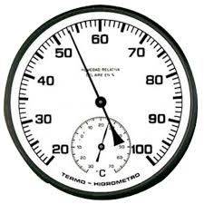

<!--
  Generated template for the SeleccionSkinPage page.

  See http://ionicframework.com/docs/components/#navigation for more info on
  Ionic pages and navigation.
-->
<ion-header>

  <ion-navbar>
    <ion-title>Seleccion Skin <ion-icon name="bluetooth" item-end style="float: right;"></ion-icon></ion-title>
  </ion-navbar>

</ion-header>


<ion-content>
    <ion-grid>
      <ion-row>
        <ion-list col-12 col-sm-6>
          <ion-item>
            <ion-thumbnail item-start>
              
            </ion-thumbnail>
            <h2>Formato Digital 1</h2>
            <p text-wrap>Elegante</p>
            <button ion-button clear item-end (click)="AbrirSkinDigitalUno()">Ver</button>
          </ion-item>
        </ion-list>
        <ion-list col-12 col-sm-6>
          <ion-item>
            <ion-thumbnail item-start>
              
            </ion-thumbnail>
            <h2>Formato Análogo 1</h2>
            <p text-wrap>Elegante</p>
            <button ion-button clear item-end>Ver</button>
          </ion-item>
        </ion-list>
        <ion-list col-12 col-sm-6>
          <ion-item>
            <ion-thumbnail item-start>
              
            </ion-thumbnail>
            <h2>Formato Digital 2</h2>
            <p text-wrap>Elegante</p>
            <button ion-button clear item-end  (click)="AbrirSkinDigitalDos()">Ver</button>
          </ion-item>
        </ion-list>
        <ion-list col-12 col-sm-6>
          <ion-item>
            <ion-thumbnail item-start>
              
            </ion-thumbnail>
            <h2>Formato Análogo 2</h2>
            <p text-wrap>Elegante</p>
            <button ion-button clear item-end>Ver</button>
          </ion-item>
        </ion-list>
        <!--
              <ion-col col-12 col-sm-6>
                1 of 4
              </ion-col>
              <ion-col col-12 col-sm-6>
                2 of 4
              </ion-col>
              <ion-col col-12 col-sm-6>
                3 of 4
              </ion-col>
              <ion-col col-12 col-sm-6>
                4 of 4
              </ion-col>
            -->
      </ion-row>
    </ion-grid>

<!--
    <ion-card (click)="AbrirSkinDigitalUno()">
        
        <div class="card-title">Skin Digital</div>
        <div class="card-subtitle">Panel digital</div>
      </ion-card>
    
      <ion-card>
        
        <div class="card-title">Skin Análogo</div>
        <div class="card-subtitle">Panel Análogo</div>
      </ion-card>
    -->
</ion-content>
